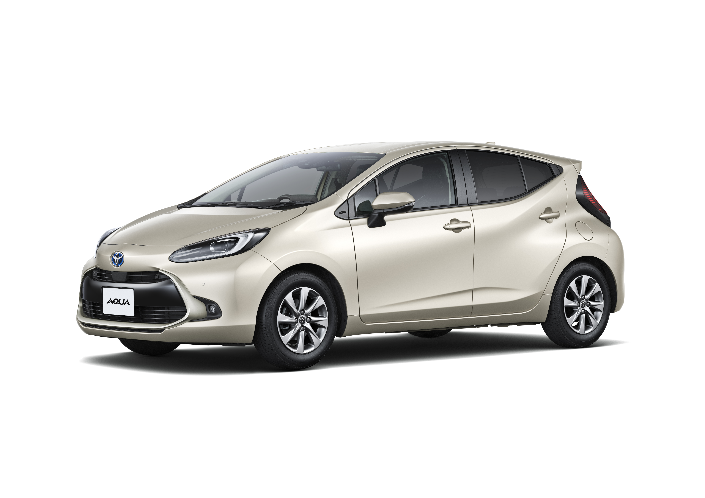
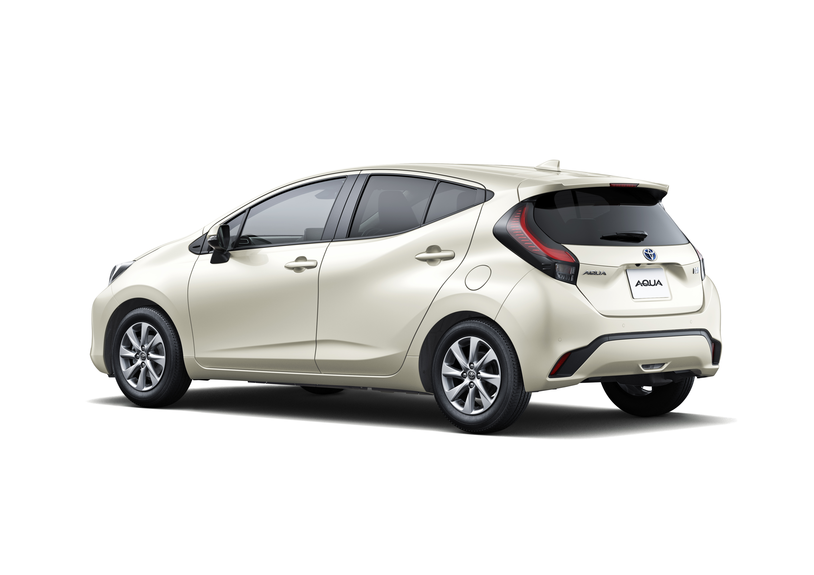
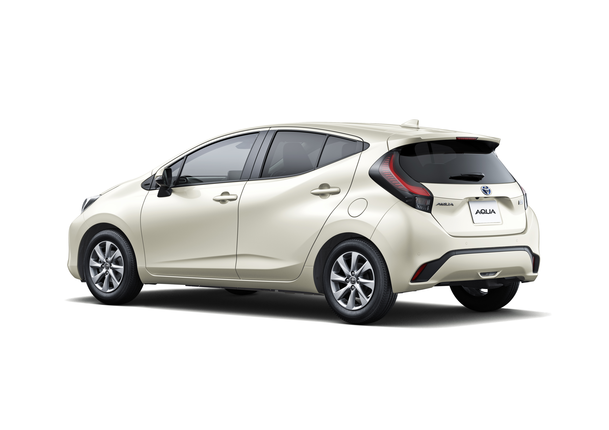

Company | Newsroom | Mobility | Sustainability | IR
Toyota strives to be a strong corporate citizen, engaging with and earning the trust of its stakeholders, and to contribute to the creation of a prosperous society through all its business operations. Our corporate principles form the basis of our initiatives, reflect values that enable action, and drive our mindset.

Since its launch, approximately 1.87 million Aqua units*2 have been sold worldwide, accounting for reductions in CO2 emissions of approximately 12.4 million tons*3 The all-new Aqua is approximately 20%*4 more fuel efficient than the previous generation; it combines outstanding fuel efficiency of 35.8 km/L*5 with the comfortable, high-quality ride of an electrified vehicle The latest generation inherits the Aqua DNA of a compact, convenient body size, and a class-beating, high-quality interior and exterior design.
 

Toyota is shifting toward a "mobility company" in this once-in-a-century period of profound transformation. We are striving toward our goal of realizing the future mobility society. With an unceasing passion for beloved cars, we will remain committed to delivering ever-better cars to our customers.
Ever since its founding, Toyota has been operating its business while seeking to contribute to a more prosperous society through the manufacturing of automobiles. At the root of its business activities always lie the Five Main Principles of Toyoda, which embody the thinking of the founder, Sakichi Toyoda. The Five Main Principles of Toyoda, which proclaim the idea of conducting business activities for the country and society, have formed the basis for every Toyota Group company's corporate principles and conduct guidelines for employees. Today, Toyota is entering a once-in-a-century transformational period, and is transforming itself into a mobility company that will provide all kinds of services related to people's mobility. To boldly accelerate this transformation, Toyota has defined the Toyota Philosophy based on the main principles of Toyoda to look back on its history and use it as the signpost for the future. Our mission is "Producing Happiness for All." To make people's lives and society better, we will be ahead of the times to work on research and innovation. Through technology, we aim to realize the convenience and happiness of the future and pass them on to all people in a manner that they can access. To this end, we develop human resources with a "YOU Perspective," who take action in the hope of bringing happiness to someone other than themselves. We believe that the Toyota Philosophy, which begins with the Five Main Principles of Toyoda, is in line with the spirit of the SDGs that aim to create a world in which "Leave no one behind" is realized, and will become guidelines for the environment, society, governance and other important initiatives. Toyota will continue to contribute to the earth's sustainability and societal development through business activities in cooperation with the global society.
The Corporate Governance Report details the execution of duties and supervision, the board of directors and its system, the Audit & Supervisory Board, remuneration for the board of directors and Audit & Supervisory Board members, and an analysis and evaluations of the board of directors' effectiveness.
Main Menu